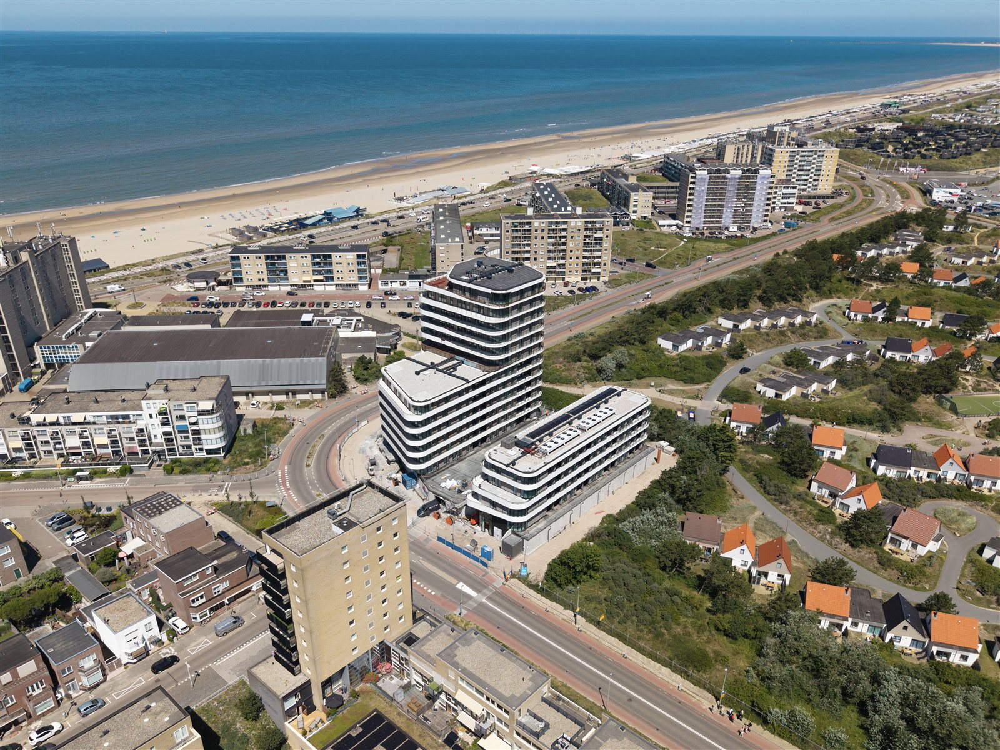
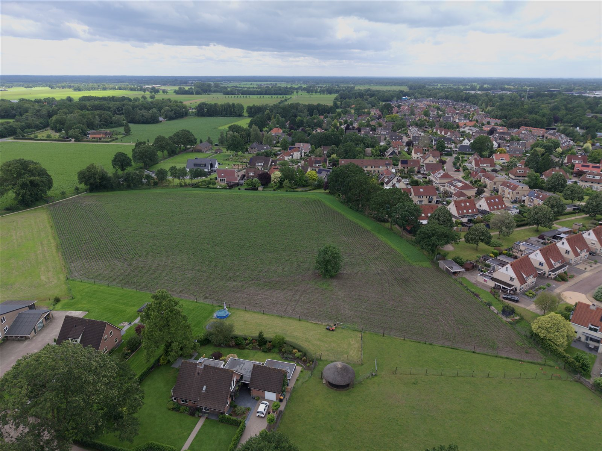
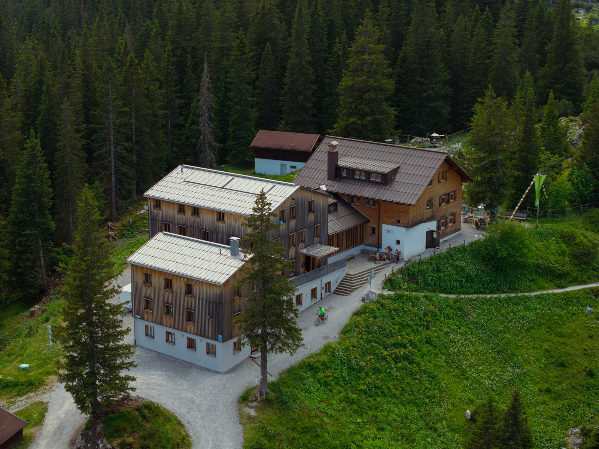

Before & after
Dankzij exact opgeslagen vliegposities kan ik maanden later exact hetzelfde beeld maken. Beweeg je muis over het beeld en zie het verschil.


Elke locatie verdient beelden die kloppen. Ik combineer verschillende technieken voor het beste resultaat.
Cinematische luchtbeelden met de DJI Air 3S — ideaal voor vastgoed, vakantieparken, jachthavens en landgoederen.
Dynamische fly-throughs met de DJI Avata 2. Bezoekers ervaren je ruimte alsof ze er zelf doorheen vliegen.
Professionele dronefoto's van woningen, terreinen en bedrijfslocaties — los te verkopen of als onderdeel van een video.
Het complete verhaal: drone, grondbeelden, montage en kleurcorrectie in één krachtige video voor je website en social media.
Vooral luchtfoto's van terreinen en bouwprojecten — handig voor documentatie, planning en promotie. Dankzij exact opgeslagen vliegposities kan ik op een later moment identieke beelden maken, bijvoorbeeld voor before & after-vergelijkingen. Ook video kan, maar fotografie is de focus.
Dankzij exact opgeslagen vliegposities kan ik maanden later exact hetzelfde beeld maken. Beweeg je muis over het beeld en zie het verschil.
Een indruk van wat ik voor jouw locatie kan maken.



Ik werk graag met bedrijven en particulieren die willen investeren in kwaliteit.
Woningen en panden die sneller verkopen met sterke beelden.
Restaurants en cafés die gasten aantrekken met sfeervolle video.
Airbnb's, campings en vakantieparken die eruit springen.
Projectdocumentatie en promotie vanaf het eerste graafwerk.
Dit zijn de meest voorkomende opdrachten, maar ik sta zeker open voor andere projecten. Twijfel je of jouw idee bij mij past? Stuur gewoon een berichtje — ik denk graag met je mee.
Ik denk graag met je mee — vrijblijvend en persoonlijk.
Neem contact op